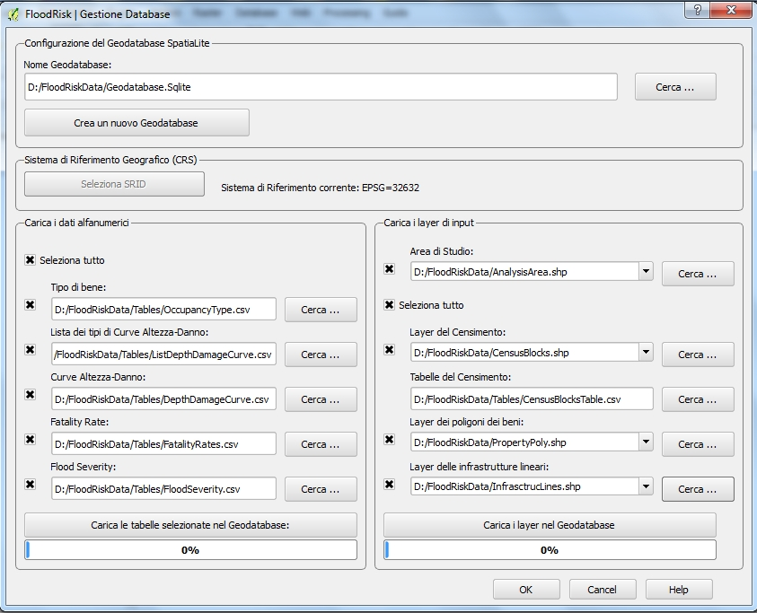

Gestione Database¶
La finestra Gestione database consente di creare un nuovo geodatabase spatialite avente il modello dei dati richiesto e di caricare in esso di dati. I dati salvati nel geodatabase riguardano la popolazione, i beni a rischio e la loro vulnerabilità rispetto alle inondazioni.

La parte in alto della finestra consente di creare nuovo geodatabase spatialite. Dopo la creazione del geodatabase e prima di aver caricato i dati geografici è necessario definire il suo Sistema di Riferimento Geografico. Prima di aver caricato il layer dell’ Area di Studio è sempre possibile cambiare il Sistema di Riferimento Geografico: dopo l’opzione è disabilitata. Per abilitarla nuovamente occorre che siano cancallati tutti i dati geografici (tabelle del geodatabase AnalysisArea, CensusBlocks, StructurePoly e InfrastrLines)
La parte a sinistra della finestra consente di caricare o aggiornare le curve di vulnerabilità dei beni. Questi dati alfanumerici sono caricati del file csv aventi come separatore il punto e virgola.
Esempi di tabelle sono elencate sotto:
La parte destra della finestra consente di caricare o aggiornare i dati geografici dei beni esposti. Questi dati vettoriali e sono caricati da shapefiles. Il sistema non ha una propria scala ma è flessibile ed è in grado di trattare diverse fonti di dati: da mappe di uso del suolo con diverso grado di dettaglio fino a dettagliate mappe del tessuto urbano. Pertanto il dettaglio dei dati dipende dalla scala della cartografica di origine e di conseguenza la scala del risultato finale dipende da ciò. I dati dei beni esposti, quindi, possono essere riferiti a grandi aree o a dettagliate mappe locali.
Di seguito è riportata la lista degli shapefile:
- Area di Studio: shapefile di poligoni
- Layer del Censimento: shapefile di poligoni avente i campi CensID tipo Real; Resident tipo Integer; Seasonal tipo Integer
- Tabelle del Censimento: file csv avente i campi CensID e Resident
- Layer dei poligoni dei beni: shapefile di poligoni avente i campi OccuType tipo VARCHAR(5); Valstr tipo Real; Valcon tipo Real
- Infrastructures Line Vector Layer: shapefile di linee avente i campi OccuType tipo VARCHAR(5); Valstr tipo Real; Valcon tipo Real
Esempio di tabella di Tipi di Bene¶
| IND | NumDomain | code | Description | Valstr | Valcon |
|---|---|---|---|---|---|
| 1 | 10 | 11100 | Continuous Urban Fabric (S.L. > 80%) | 1520 | 760 |
| 2 | 10 | 11210 | Discontinuous Dense Urban Fabric (S.L. : 50% - 80%) | 650 | 325 |
| 3 | 10 | 11220 | Discontinuous Medium Density Urban Fabric (S.L. : 30% - 50%) | 400 | 200 |
| 4 | 10 | 11230 | Discontinuous Low Density Urban Fabric (S.L. : 10% - 30%) | 200 | 100 |
| 5 | 10 | 11240 | Discontinuous Very Low Density Urban Fabric (S.L. < 10%) | 100 | 50 |
Valstr in Euro/sqm
Valcon in Euro/sqm
Esempio di tabella di ListaTipiCurveAltezzaDanno¶
| VulnID | Description |
|---|---|
| 1 | Urban Altas Depth-Damage Curves |
Esempio di tabella di curva Altezza-Danno¶
| VulnID | OccuType | DmgType | VulnType | HydroValue | Damage |
|---|---|---|---|---|---|
| 1 | 11100 | 1 | 1 | 0.3048 | 0.00 |
| 1 | 11100 | 1 | 1 | 0.7620 | 0.10 |
| 1 | 11100 | 1 | 1 | 0.9144 | 0.25 |
| 1 | 11100 | 1 | 1 | 1.2192 | 0.40 |
| 1 | 11100 | 1 | 1 | 1.5240 | 0.50 |
| 1 | 11100 | 1 | 1 | 2.4384 | 0.60 |
| 1 | 11100 | 1 | 1 | 3.0000 | 0.60 |
| 1 | 11100 | 1 | 1 | 9999.0 | 0.60 |
HydroValue in metri di altezza d’acqua
Esempio di tabella di FatalityRates¶
| FRType | num | Fseverity | WarnTime | Understanding | FatRate |
|---|---|---|---|---|---|
| 0 | 3 | HIGHT | 0 | Vague | 0.75 |
| 0 | 3 | HIGHT | 24 | Vague | 0.75 |
| 0 | 2 | MEDIUM | 0 | Vague | 0.15 |
| 0 | 2 | MEDIUM | 0.25 | Vague | 0.15 |
| 0 | 2 | MEDIUM | 1 | Vague | 0.04 |
| 0 | 2 | MEDIUM | 24 | Vague | 0.03 |
| 0 | 1 | LOW | 0 | Vague | 0.01 |
| 0 | 1 | LOW | 0.25 | Vague | 0.01 |
| 0 | 1 | LOW | 1 | Vague | 0.007 |
| 0 | 1 | LOW | 24 | Vague | 0.0003 |
| 0 | 3 | HIGHT | 0 | Precise | 0.75 |
| 0 | 3 | HIGHT | 24 | Precise | 0.75 |
| 0 | 2 | MEDIUM | 0 | Precise | 0.15 |
| 0 | 2 | MEDIUM | 0.25 | Precise | 0.15 |
| 0 | 2 | MEDIUM | 1 | Precise | 0.02 |
| 0 | 2 | MEDIUM | 24 | Precise | 0.01 |
| 0 | 1 | LOW | 0 | Precise | 0.01 |
| 0 | 1 | LOW | 0.25 | Precise | 0.01 |
| 0 | 1 | LOW | 1 | Precise | 0.002 |
| 0 | 1 | LOW | 24 | Precise | 0.0002 |
WarnTime : in ore